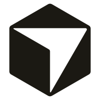
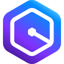

Hatayı anlatma;
geri sar, göster.
Rewind, geliştirme ortamında uygulamanın son 60 saniyesini sürekli kaydeder. Bir şey bozulunca geri sarar, hatalı öğeye tıklarsın. Ajan tahmin yerine kanıt alır, düzeltir ve düzeltmeyi kırmızı → yeşil bir testle kanıtlar.
Sepet
- Ara toplam
- 1.500 ₺
- İndirim YAZ10
- −150 ₺
- Kargo
- 30 ₺
- Toplam
- 135030 ₺
GET /api/shipping → {"fee": "30"}
MCP destekleyen ajanlarla çalışır
- Claude Code


Cursor
Codex- GitHub Copilot
- Gemini CLI
- Devin Desktop
- Cline

Zed- JetBrains AI
- Continue

Amazon Q Developer
Tarif etmek yerine göster.
Hatayı kelimelerle anlatınca ajan tahmin eder, aday dosyaları tarar ve soru sorar. Rewind'la tek tıkla ne olduğunu ve nerede olduğunu verirsin.
ÖNCEAnlatarak
"Kupon girince toplam saçma bir sayı oluyor, sepette bir şey bozuk galiba."
- Ajan aday dosyaları tek tek okur, ekran görüntüsünü yorumlar
- Yanlış dosyada düzeltme yapar, soru-cevap turlarına girer
- Sonuç "düzelmiş olmalı" der; kanıt yok
SONRAGeri sarıp göstererek
Toplama tıkla: "Ne olmalıydı?" → 1380 ₺
- Öğe ve kaynak satırı:
Cart.tsx, bileşen yığınıyla - Kanıt:
GET /api/shipping→{"fee": "30"}(metin) - Önce kırmızı, sonra iki kez yeşil Playwright testi
Dört adımda hatadan kanıtlanmış düzeltmeye.
Rewind arka planda kayıt yapar. Senin işin, hatanın başladığı anı bulup göstermek. Gerisi ajanın.
- Seramik kupa · Noktalı defter · Kanvas çanta
- 1.500 ₺
- İndirim YAZ10
- −150 ₺
- Toplam
- 135030 ₺
Sepet
- Ara toplam
- 1.500 ₺
- İndirim YAZ10
- −150 ₺
- Kargo
- 30 ₺
- Toplam
- 135030 ₺
- seçici
- [data-testid="total"]
- kaynak
- src/Cart.tsx:69
- bileşen
- <App> › <Cart>
list_incidents ile görecek.Tek tıklama, tam bağlam.
Ajanın aldığı paketin içine bak. Sekmeler, YAZ10 demo hatasının gerçek kanıtını gösteriyor.
İşaretlenen öğe
Seçici, kaynak satırı (source map ile), bileşen yığını, props/state.
66 <dt>Kargo</dt>67 <dd data-testid="shipping">{formatTry(shipping)}</dd>68 <dt>Toplam</dt>69 <dd data-testid="total">{formatTry(total)}</dd>70 </dl>
Ağ
fetch/XHR istekleri, durumlar, süreler ve gövdeler.
| Yöntem | Yol | Durum | Süre |
|---|---|---|---|
| GET | /api/products | 200 | 14 ms |
| GET | /api/shipping | 200 | 9 ms |
| POST | /api/coupon | 200 | 21 ms |
{ "fee": "30" } // sayı değil, metin → 1350 + "30" = "135030"
Adımlar
Ajan hatayı bu adımları gerçek tarayıcıda oynatarak yeniden üretir.
- −41.2 snavigatelocalhost:5173/
- −38.9 sclick[data-testid="add-1"] · Sepete ekle
- −36.1 sclick[data-testid="add-2"] · Sepete ekle
- −34.0 sclick[data-testid="add-3"] · Sepete ekle
- −27.5 sinput#coupon = "YAZ10"
- −24.8 sclickbutton[type=submit] · Uygula
Store değişiklikleri
trackStore('cart', …) ile izlenen Zustand store'u.
items: [3 öğe]- couponCode: null+ couponCode: "YAZ10"- discount: 0+ discount: 0.1
Store değerleri doğru: hata hesaplamada, store'da değil. Ajan bunu da kanıttan okur.
Konsol
Hatalar, uyarılar, yakalanmamış istisnalar ve kaynak satırları.
Kanıt güveni
Kanıtın ne kadar güvenilir olduğu açıkça yazılır; eksik olan uydurulmaz.
- ✓Kaynak çözüldüJSX satırı source map ile bulunduresolved
- ✓Öğe eşlendireplay düğümü canlı sayfadaki aynı öğeye bağlandımatched
- !Props/state canlıişaretleme anında okundu, geçmişteki ana ait değillive
- ✓Pencere öncesi oturum yokakışın tamamı 60 sn içindecomplete
- ✓Kırpılan alan yokboyut sınırına takılan gövde yok0
"Düzelmiş olmalı" yok. Kırmızı, sonra yeşil.
Ajanın run_repro aracı kayıttaki adımları gerçek bir tarayıcıda oynatır ve senin beklentini test olarak denetler. Olay yalnızca aynı testle önce kırmızı, ardından iki kez üst üste yeşil sonuç alınırsa "doğrulandı" diye kapanır.
135030 ₺, beklenen 1380 ₺.discounted + Number(shipping)fixedKoşul sağlanmazsa olay gerekçesiyle birlikte fixed_unverified olarak kapanır.
{ "id": "rw-20261026-150247-x6mn", "assertions": "await expect(target).toHaveText('1380 ₺');" } // Assertion metni hiçbir zaman çalıştırılmaz. // Dar bir dilbilgisiyle ayrıştırılır; test kodu // yalnızca bu ara temsilden üretilir. // Olay verisi koda gömülmez; adımlar testin // yanındaki .steps.json dosyasından okunur.
Kullandığın ajanla çalışır.
Rewind standart bir MCP sunucusudur; belirli bir ajana bağlı değildir. Bir ajan seç, bağlantı ayarını gör.
Veri makinede kalır.
Kayıt ve olaylar yerelde tutulur. Şifre, token ve kişisel veriler ajana gitmeden, daha tarayıcıdayken gizlenir.
Yalnızca yerel
Alıcı yalnızca 127.0.0.1 üzerinde dinler. Olaylar proje kökündeki .rewind/ klasörüne yazılır ve git'e girmez.
Gönderimden önce gizleme
Anahtar adına ve desene göre: şifre, token, API anahtarı, JWT, çerez. Kart, IBAN ve T.C. Kimlik No sağlama algoritmasıyla doğrulanır.
Hata ayıklama değerleri korunur
Kupon kodu, tutar, tarih ve durum kodu olduğu gibi kalır. Doğruluk, 150'den fazla örnekli bir fixture setiyle CI'da denetlenir.
Sertleştirilmiş alıcı
Host doğrulaması (DNS rebinding), Origin izin listesi, zorunlu JSON ve gövde boyutu sınırı.
Gizleme bir güvenlik garantisi değildir. Ajana giden paket, ajanın kullandığı model sağlayıcısına gidebilir. Göndermeden önce önizlemeye bak.
İki paket, birkaç satır.
rewind-devtools uygulamana eklenen tarayıcı bileşeni, rewind-mcp ise ajanına bağlanan MCP sunucusu. Node.js 22 veya üstü gerekir.
1Paketleri kur
npm i -D rewind-devtools rewind-mcp @playwright/test npx playwright install chromium
2Bileşeni ekle
import { Rewind } from 'rewind-devtools'; root.render( <> <App /> <Rewind /> </>, );
Üretim build'inde kaydedici koda hiç girmez.
3Ajanına bağla
{
"mcpServers": {
"rewind": {
"command": "npx",
"args": ["--no-install", "rewind-mcp"]
}
}
}Diğer ajanlar için ayar: Ajanlar.
4Ajana söyle
Rewind olaylarına bak ve düzelt.
Ajanın eline geçenler.
Ajan bu araçlarla olayı okur, hatayı yeniden üretir, gerekirse sana panelden soru sorar.
list_incidents | Açık, kapalı ya da tüm olayları listeler. |
get_incident | Raporu Markdown olarak verir: köken, dosya:satır, kanıt güveni, beklenti, birincil kanıt, adımlar. |
get_incident_events | Ham zaman çizelgesini JSON olarak verir. |
get_dom_snapshot | O andaki HTML'i verir; içinde arama yapılabilir. |
run_repro | Adımları gerçek tarayıcıda oynatır, beklentiyi işaretlenen anda denetler. |
get_repro_script | Aynı testi çalıştırmadan üretir. |
reply_to_incident | Geliştiriciye panelden soru sorar, istenirse yanıtı bekler. |
mark_fixed | Olayı kapatır. Doğrulama koşulunu sunucu denetler. |
Neyi yapmadığını da söyleyelim.
- Yalnızca geliştirme ortamı içindir.
- Bileşen bilgisi yalnızca React için çıkarılır.
- Props/state değerleri işaretleme anında canlı uygulamadan okunur; rapor bunu belirtir.
- React 19'da HMR ile değişen bir bileşenin eski öğelerinin satırı, sayfa yenilenene kadar doğrulanamaz; Rewind bunu açıkça işaretler.
- Sunucu bileşenlerinin (RSC) satırı yalnızca Next.js'te ve en iyi çaba ile çözülür.
- Canvas, video ve çapraz kökenli iframe içerikleri oynatılmaz; WebSocket mesajları kaydedilmez.
- WSL2, Docker ve uzaktan geliştirme ortamları v1.0'da desteklenmez.
Bir sonraki hatayı geri sar.
Demoyu çalıştır, YAZ10 kuponunu dene ve ajanının doğru satırı ilk turda bulmasını izle.